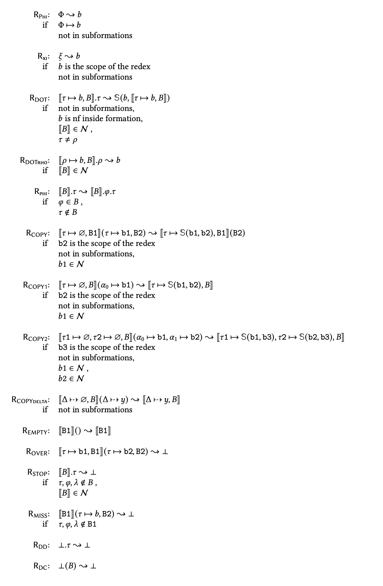

eo-phi-normalizer print-rules
CLI
--help
eo-phi-normalizer print-rules --help
Usage: eo-phi-normalizer print-rules [-c|--compact] [-r|--rules FILE] [--tex]
Print rules in LaTeX format.
Available options:
-c,--compact Print rules, each on a single line.
-r,--rules FILE FILE with user-defined rules. If unspecified,
new.yaml is rendered.
--tex Output LaTeX.
-h,--help Show this help text
Default version
The command below prints to the console rules from new.yaml, listing each condition of the rules on a separate line.

eo-phi-normalizer print-rules --tex
\begin{figure*}
\begin{tabular}{rl}
\rrule{Phi}: & $ Q $ \(\trans\) $ b $ \\\text {if }& $ Q -> b $ \\¬ in subformations\\\\
\rrule{xi}: & $ \xi $ \(\trans\) $ b $ \\\text {if }& $ b $ is the scope of the redex\\¬ in subformations\\\\
\rrule{DOT}: & $ [[ \tau -> b, B ]].\tau $ \(\trans\) $ \mathbb{S}(b, [[ \tau -> b, B ]]) $ \\\text {if }¬ in subformations,\\& $ b $ is nf inside formation,\\& $ [[ B ]]\in\mathcal{N} $ ,\\& $ \tau \neq ^ $ \\\\
\rrule{DOTrho}: & $ [[ ^ -> b, B ]].^ $ \(\trans\) $ b $ \\\text {if }& $ [[ B ]]\in\mathcal{N} $ \\\\
\rrule{phi}: & $ [[ B ]].\tau $ \(\trans\) $ [[ B ]].@.\tau $ \\\text {if }& $ @ \in B $ ,\\& $ \tau \notin B $ \\\\
\rrule{COPY}: & $ [[ \tau -> ?, B1 ]]( \tau -> b1, B2 ) $ \(\trans\) $ [[ \tau -> \mathbb{S}(b1, b2), B1 ]]( B2 ) $ \\\text {if }& $ b2 $ is the scope of the redex\\¬ in subformations,\\& $ b1\in\mathcal{N} $ \\\\
\rrule{COPY1}: & $ [[ \tau -> ?, B ]]( 0-> b1 ) $ \(\trans\) $ [[ \tau -> \mathbb{S}(b1, b2), B ]] $ \\\text {if }& $ b2 $ is the scope of the redex\\¬ in subformations,\\& $ b1\in\mathcal{N} $ \\\\
\rrule{COPY2}: & $ [[ \tau1 -> ?, \tau2 -> ?, B ]]( 0-> b1, 1-> b2 ) $ \(\trans\) $ [[ \tau1 -> \mathbb{S}(b1, b3), \tau2 -> \mathbb{S}(b2, b3), B ]] $ \\\text {if }& $ b3 $ is the scope of the redex\\¬ in subformations,\\& $ b1\in\mathcal{N} $ ,\\& $ b2\in\mathcal{N} $ \\\\
\rrule{COPYdelta}: & $ [[ D> ?, B ]]( D> y ) $ \(\trans\) $ [[ D> y, B ]] $ \\\text {if }¬ in subformations\\\\
\rrule{EMPTY}: & $ [[ B1 ]]( ) $ \(\trans\) $ [[ B1 ]] $ \\\text {if }\\\\
\rrule{OVER}: & $ [[ \tau -> b1, B1 ]]( \tau -> b2, B2 ) $ \(\trans\) $ \dead $ \\\text {if }\\\\
\rrule{STOP}: & $ [[ B ]].\tau $ \(\trans\) $ \dead $ \\\text {if }& $ \tau, @, \lambda \notin B $ ,\\& $ ^ \in B $ ,\\& $ [[ B ]]\in\mathcal{N} $ \\\\
\rrule{MISS}: & $ [[ B1 ]]( \tau -> b, B2 ) $ \(\trans\) $ \dead $ \\\text {if }& $ \tau, @, \lambda \notin B1 $ \\\\
\rrule{DD}: & $ \dead.\tau $ \(\trans\) $ \dead $ \\\text {if }\\\\
\rrule{DC}: & $ \dead( B ) $ \(\trans\) $ \dead $ \\\text {if }
\end{tabular}
\end{figure*}
Compact version
The compact version prints rules listing all conditions on a single line.

eo-phi-normalizer print-rules --tex --compact
\begin{figure*}
\rrule{Phi}: $ Q $ \(\trans\) $ b $ \quad\text {if } $ Q -> b $ , not in subformations\\\vspace*{0.5em}
\rrule{xi}: $ \xi $ \(\trans\) $ b $ \quad\text {if } $ b $ is the scope of the redex, not in subformations\\\vspace*{0.5em}
\rrule{DOT}: $ [[ \tau -> b, B ]].\tau $ \(\trans\) $ \mathbb{S}(b, [[ \tau -> b, B ]]) $ \quad\text {if }not in subformations, $ b $ is nf inside formation, $ [[ B ]]\in\mathcal{N} $ , $ \tau \neq ^ $ \\\vspace*{0.5em}
\rrule{DOTrho}: $ [[ ^ -> b, B ]].^ $ \(\trans\) $ b $ \quad\text {if } $ [[ B ]]\in\mathcal{N} $ \\\vspace*{0.5em}
\rrule{phi}: $ [[ B ]].\tau $ \(\trans\) $ [[ B ]].@.\tau $ \quad\text {if } $ @ \in B $ , $ \tau \notin B $ \\\vspace*{0.5em}
\rrule{COPY}: $ [[ \tau -> ?, B1 ]]( \tau -> b1, B2 ) $ \(\trans\) $ [[ \tau -> \mathbb{S}(b1, b2), B1 ]]( B2 ) $ \quad\text {if } $ b2 $ is the scope of the redex, not in subformations, $ b1\in\mathcal{N} $ \\\vspace*{0.5em}
\rrule{COPY1}: $ [[ \tau -> ?, B ]]( 0-> b1 ) $ \(\trans\) $ [[ \tau -> \mathbb{S}(b1, b2), B ]] $ \quad\text {if } $ b2 $ is the scope of the redex, not in subformations, $ b1\in\mathcal{N} $ \\\vspace*{0.5em}
\rrule{COPY2}: $ [[ \tau1 -> ?, \tau2 -> ?, B ]]( 0-> b1, 1-> b2 ) $ \(\trans\) $ [[ \tau1 -> \mathbb{S}(b1, b3), \tau2 -> \mathbb{S}(b2, b3), B ]] $ \quad\text {if } $ b3 $ is the scope of the redex, not in subformations, $ b1\in\mathcal{N} $ , $ b2\in\mathcal{N} $ \\\vspace*{0.5em}
\rrule{COPYdelta}: $ [[ D> ?, B ]]( D> y ) $ \(\trans\) $ [[ D> y, B ]] $ \quad\text {if }not in subformations\\\vspace*{0.5em}
\rrule{EMPTY}: $ [[ B1 ]]( ) $ \(\trans\) $ [[ B1 ]] $ \quad\text {if }\\\vspace*{0.5em}
\rrule{OVER}: $ [[ \tau -> b1, B1 ]]( \tau -> b2, B2 ) $ \(\trans\) $ \dead $ \quad\text {if }\\\vspace*{0.5em}
\rrule{STOP}: $ [[ B ]].\tau $ \(\trans\) $ \dead $ \quad\text {if } $ \tau, @, \lambda \notin B $ , $ ^ \in B $ , $ [[ B ]]\in\mathcal{N} $ \\\vspace*{0.5em}
\rrule{MISS}: $ [[ B1 ]]( \tau -> b, B2 ) $ \(\trans\) $ \dead $ \quad\text {if } $ \tau, @, \lambda \notin B1 $ \\\vspace*{0.5em}
\rrule{DD}: $ \dead.\tau $ \(\trans\) $ \dead $ \quad\text {if }\\\vspace*{0.5em}
\rrule{DC}: $ \dead( B ) $ \(\trans\) $ \dead $ \quad\text {if }
\end{figure*}